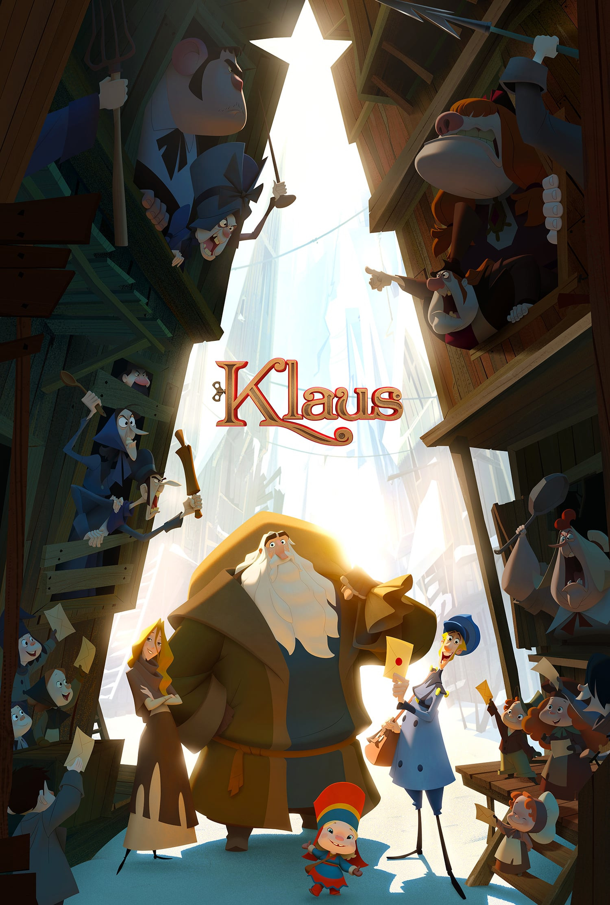

Klaus
I segreti del Natale
Anno di uscita: 2019

Pellicola di produzione spagnolo-statunitense ispirata alla Faida Hatfield-McCoy, è una rilettura delle origini di Babbo Natale. Per l'aspetto del film, Pablos e il suo studio hanno cercato di «superare alcuni dei limiti tecnici dell'animazione tradizionale», dando al progetto un'illuminazione organico-volumetrica e un texturing «unici», pur cercando di mantenere una sensazione artigianale.
Trama:
Un postino egoista e un giocattolaio solitario stringono un'improbabile amicizia, portando gioia in una città fredda e buia che ne ha disperatamente bisogno.